◆「艾梅洛Ⅱ世閣下事件簿合作活動Pick Up召喚(每日交替)」期間◆
期間:2019年4月27日(六) 21:00～5月11日(六) 11:59
舉辦期間限定「艾梅洛Ⅱ世閣下事件簿合作活動Pick Up召喚(每日交替)」！
※未通過第2部 第3章「Lostbelt No.3 － intro －」的狀態也能進行「艾梅洛Ⅱ世閣下事件簿合作活動Pick Up召喚(每日交替)」。
於艾梅洛Ⅱ世閣下事件簿×Fate/Grand Order合作活動「萊涅絲女士事件簿」活躍的「★5(SSR)司馬懿〔萊涅絲〕」以期間限定登場！
並且「★4(SR)阿斯特蕾亞」也新登場！
本次包含上述Pick Up 4位從者！
「★4(SR)Emiya〔Assassin〕」「★4(SR)阿斯特蕾亞」以每日交替Pick Up！
「★5(SSR)司馬懿〔萊涅絲〕」「★3(R)查爾斯・巴貝奇」常駐Pick Up。
詳情請在聖晶石召喚畫面左下的召喚詳細確認。
「★5(SSR)ホワイダニット」「★4(SR)冬の祈り」「★3(R)エルメロイ教室」做為期間限定概念禮裝登場！
裝備上述3種概念禮裝的話，在合作活動「萊涅絲女士事件簿」中會提升活動道具的掉落獲得數。
◆有關從者的注意◆
※司馬懿〔萊涅絲〕在Pick Up期間結束後不會追加到故事召喚。
※請注意「艾梅洛Ⅱ世閣下事件簿合作活動Pick Up召喚(每日交替)」做為每日交替，阿斯特蕾亞就算Pick Up期間中也會有不被抽出的日子。
※阿斯特蕾亞自Pick Up期間結束後的2019年5月11日(六) 12:00追加到故事召喚。
※Emiya〔Assassin〕、查爾斯・巴貝奇在Pick Up期間結束後仍會在故事召喚被抽出。
◆有關概念禮裝的注意◆ ※エルメロイ教室在Pick Up期間中，也能靠友情點數召喚獲得。 ※請注意自友情點數召喚抽出的エルメロイ教室在自動變還設定登錄★3(R)概念禮裝的情況，會變成自動變還的對象。
Pick Up期間中，期間限定從者、新登場從者、Pick Up從者、期間限定概念禮裝的出現機率提升！
10次召喚中確定1張★4(SR)以上和確定1位★3(R)以上的從者！
※確定★4(SR)以上包含從者和概念禮裝。
※本頁面皆為開發中圖片。會有與實際圖片相異的情況。
◆「艾梅洛Ⅱ世閣下事件簿合作活動Pick Up召喚(每日交替)」Pick Up內容◆
| Pick Up期間 | Pick Up內容 | |
|---|---|---|
| 全天Pick Up | 每日交替追加Pick Up | |
| 4/27(六) 21:00～ 4/30(二) 22:59 |
★5 司馬懿〔萊涅絲〕 ★3 查爾斯・巴貝奇 |
★4 阿斯特蕾亞 |
| 4/30(二) 23:00～ 5/1(三) 22:59 |
★5 司馬懿〔萊涅絲〕 ★3 查爾斯・巴貝奇 |
★4 Emiya〔Assassin〕 ★4 阿斯特蕾亞 |
| 5/1(三) 23:00～ 5/2(四) 22:59 |
★5 司馬懿〔萊涅絲〕 ★3 查爾斯・巴貝奇 |
★4 Emiya〔Assassin〕 |
| 5/2(四) 23:00～ 5/6(一) 22:59 |
★5 司馬懿〔萊涅絲〕 ★3 查爾斯・巴貝奇 |
★4 阿斯特蕾亞 |
| 5/6(一) 23:00～ 5/7(二) 22:59 |
★5 司馬懿〔萊涅絲〕 ★3 查爾斯・巴貝奇 |
★4 Emiya〔Assassin〕 ★4 阿斯特蕾亞 |
| 5/7(二) 23:00～ 5/8(三) 22:59 |
★5 司馬懿〔萊涅絲〕 ★3 查爾斯・巴貝奇 |
★4 Emiya〔Assassin〕 |
| 5/8(三) 23:00～ 5/11(六) 11:59 |
★5 司馬懿〔萊涅絲〕 ★3 查爾斯・巴貝奇 |
★4 Emiya〔Assassin〕 ★4 阿斯特蕾亞 |
※請注意會以每日交替變更Pick Up的從者。
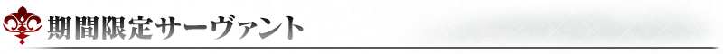
 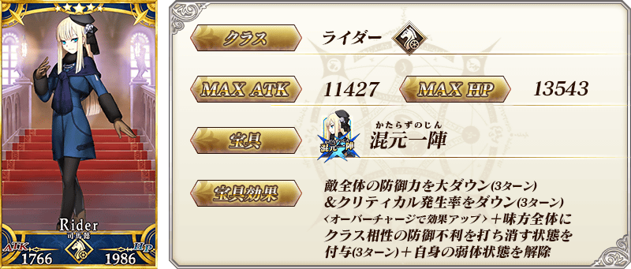
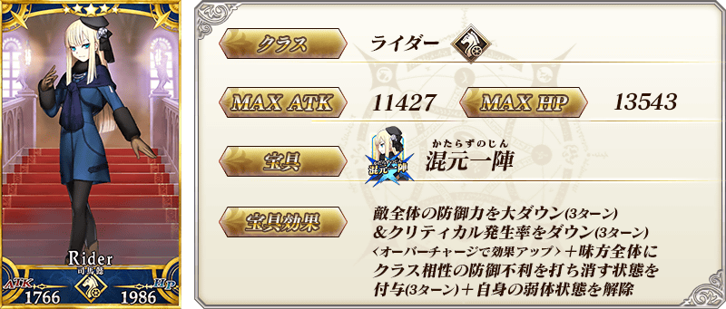
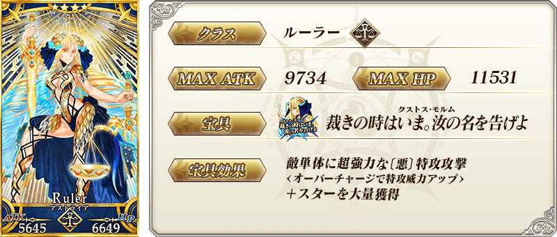 ※上述「★4(SR)阿斯特蕾亞」的卡面為靈基再臨第2階段。
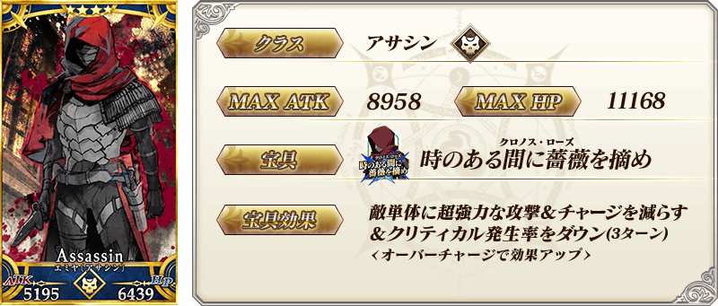 ※上述「★4(SR)Emiya〔Assassin〕」的卡面為靈基再臨第2階段。
 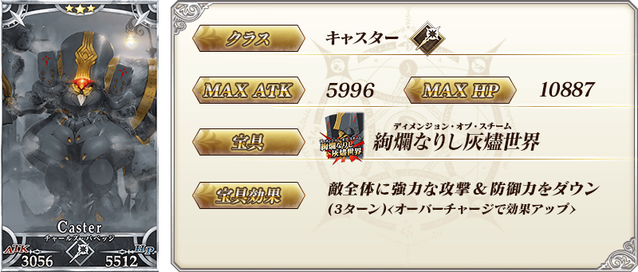
※上述「★3(R)查爾斯・巴貝奇」的卡面為靈基再臨第2階段。
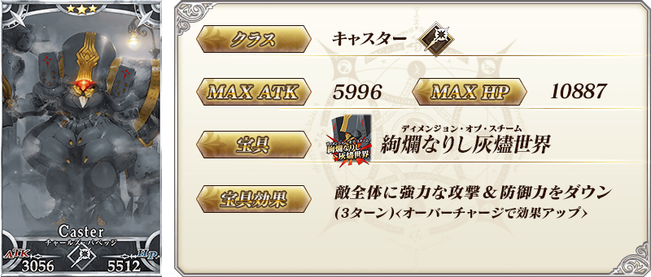
※上述「★3(R)查爾斯・巴貝奇」的卡面為靈基再臨第2階段。
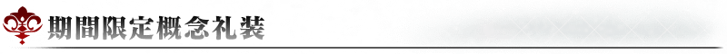

|
★★★★★SSR |

|
★★★★SR |

|
★★★R |
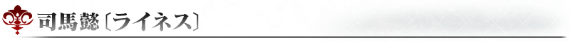

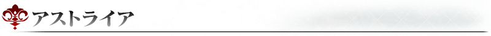
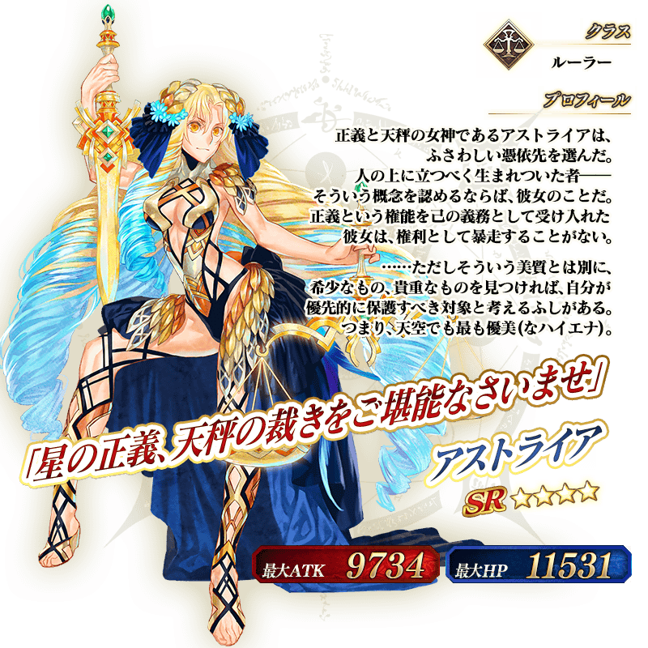 ※上述「★4(SR)阿斯特蕾亞」的立繪為靈基再臨第2階段。
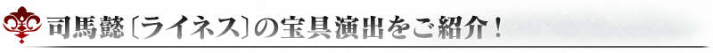
介紹「★5(SSR)司馬懿〔萊涅絲〕」的寶具演出！
在「Fate/Grand Order」官方網站內的公告中，以影片公開寶具演出，敬請確認。
介紹「★4(SR)Emiya〔Assassin〕」「★4(SR)阿斯特蕾亞」的寶具演出！
在「Fate/Grand Order」官方網站內的公告中，以影片公開寶具演出，敬請確認。
其他還有，合作活動「萊涅絲女士事件簿」同時舉辦！
關於詳情，請自下述橫幅確認。